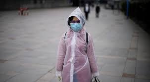
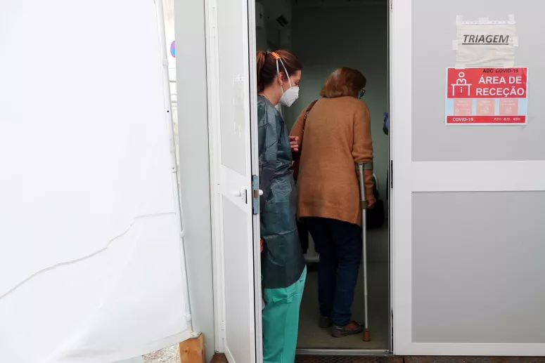
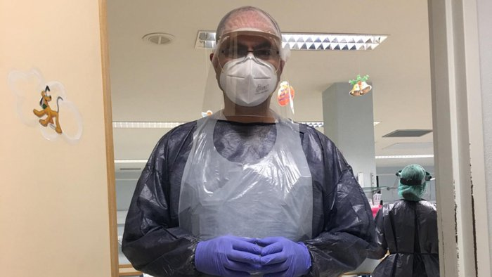

Portugal
PortugalFidelity: High
Portugal recorded another 21 deaths from covid-19 on the last day, increasing the total to 735 since the onset of the pandemic. The country has a total of 20,863 cases of SARS-CoV-2 virus infection, 657 more than the day before – which corresponds to a growth rate of 3.2%. The data were released this Monday in the epidemiological bulletin of the Directorate-General for Health (DGS).
The fatality rate in Portugal is 3.5%, and over 70 years old is 12.8%. The number of retrieved remains unchanged: there are 610 — to be considered "cured", two negative tests are needed.
There are 1208 in-patients and 215 in intensive care units (nine fewer than on Sunday). People undergoing treatment at home account for 87.8% of cases. The percentage in hospital is 5.8%, with 1.8% in intensive care and 4.8% in the infirmary”, revealed the Secretary of State for Health, António Lacerda Sales, at a press conference.
Source : Publico - 20/04/2020
Fidelity: High
Another 25 deaths from COVID-19 in 24 hours and another 163 infected in Portugal. The numbers were released this Monday in the epidemiological bulletin of the Directorate-General for Health (DGS).
Since the epidemic began in Portugal, 928 deaths have been registered associated with COVID-19 and 24,027 cases of infection, according to the epidemiological bulletin released by the General Directorate of Health (DGS). Regarding the Sunday data, there is an increase of 25 dead (percentage increase of 2.8%) and of 163 infected (percentage increase of 0.7%.). There are already 1,357 recovery cases, 28 more than yesterday.
Source : Sapo - 27/04/2020
Fidelity: High
Manuel is a nurse and volunteered to start working with those infected, but he takes no more risks and continues to sleep in a different room from his wife and stay away from his daughters.
Sílvia no longer spends her life cleaning the house with water and bleach but she still doesn't dare to join the rest of the extended family — not even with those who have also been infected and have already been reported as recovered.
And if Sara has finally allowed herself to play with her 2-and-a-half-year-old son, without wearing a mask, on the other hand side doesn't even want to hear about stepping back into the street — which is not without its fair share of irony, since it was precisely at home that she caught the new coronavirus.
All had Covid-19 and all were reported as recovered — they are part of the only green-hope value that it appears in the reports where the General Directorate of Health reports on the evolution of the disease, exactly that which rises more slowly and continues, at least for the time being, not being able to surpass the black number of deaths.
Source : Observador - 18/04/2020
(Swipe over the chart to see each day's cases)